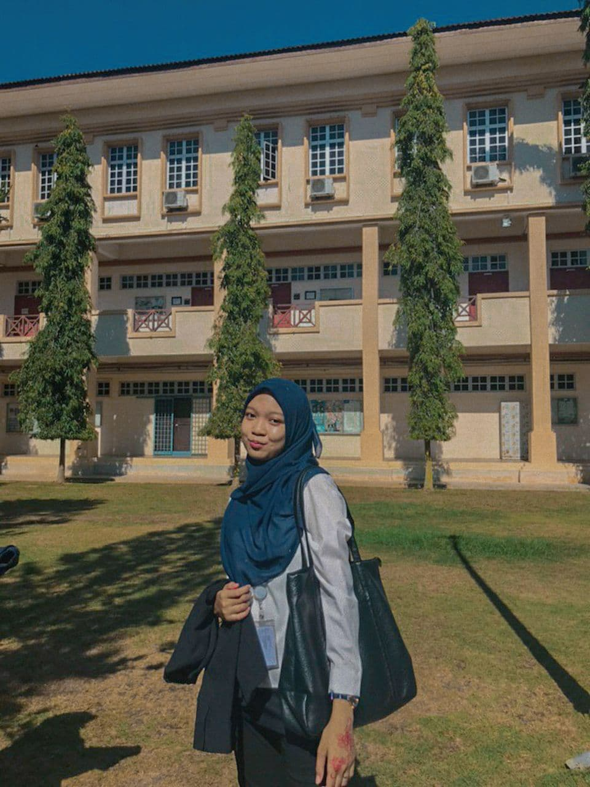

My Biodata

- FULL NAME: Norliyana Binti Mohd Saleh
- KNOWN AS: El, Yana, Lyn, Liyana, Naa
- GENDER : Female
- AGE : 20 Years Old
- WEIGHT : 47kg
- HEIGHT : 16Ocm
- NATIONALITY : Malaysian
- RELIGION : Islam
- D.O.B : 6 November 2001
- P.O.B : Hospital Parit Buntar, Perak
- LIVE IN : Parit Buntar, Perak
- LANGUAGE : Malay, English and a bit Korean
- MARITAL STATUS : Single
- SIBLINGS : 2 Older Sisters, 1 Older Brother
- FAV COLOR : Blue, Red, Black, White
- FAV FOOD : Chicken Rice, Tomyum
- FAV DRINK : Ice Milo, Ice Tea
- HOBBY : Writing, Reading
- AMBITION(S) : Lecturer
- INTEREST(S) : Learning new language; Korean and France
- ACHIEVEMENT(S) : UPSR (3A), PT3 (7A), SPM (2A), Dean List for Semester 3 & 4
- EDUCATIONAL QUALIFICATION : Diploma in Information Management, UiTM Kedah
- SKILL(S) : Skilled in using Adobe Illustrator, Photoshop, Lightroom, InDesign, and Premier Pro
- MOTTO :Don't be afraid of the dark side. Sometimes it leads you to a bright end
- FAV SONG(S) : Bittersweet